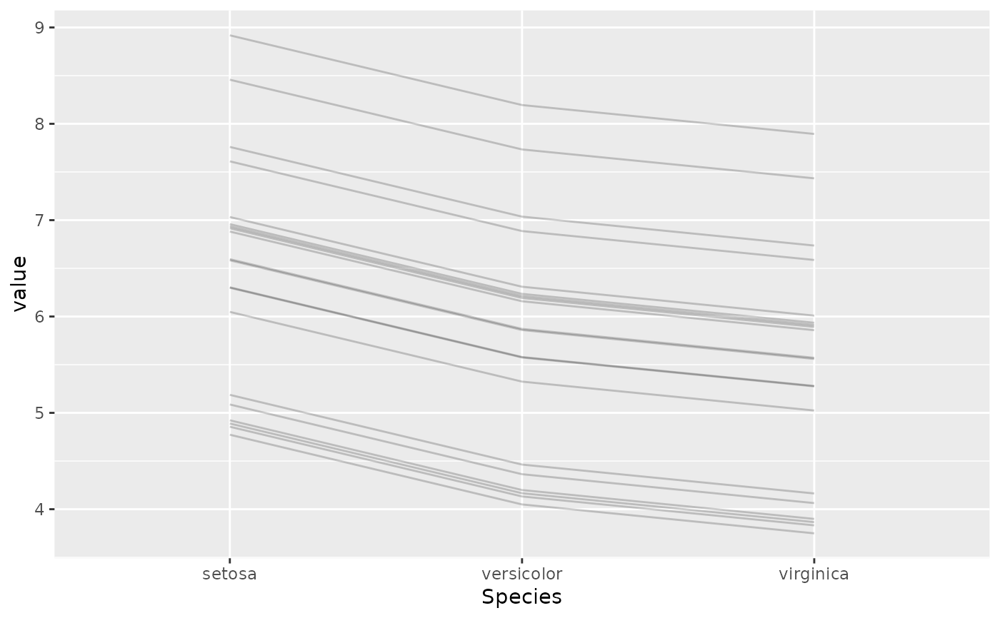
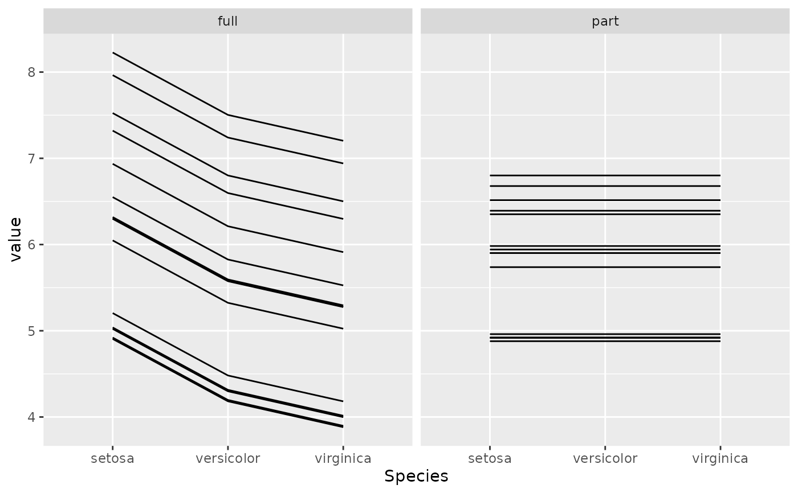
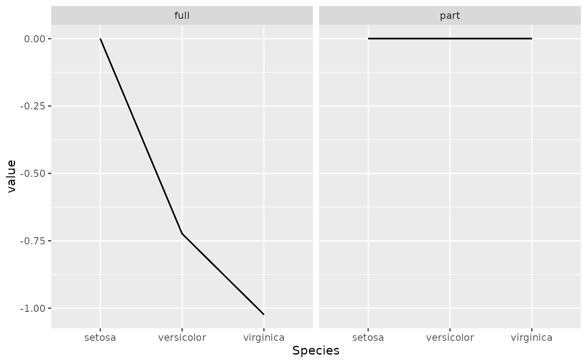
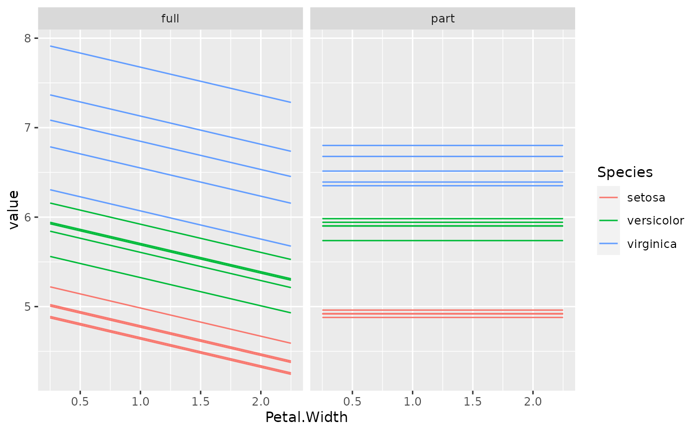

Minimal visualization of an object of class "light_ice" as ggplot2::geom_line().
The object returned is of class "ggplot" and can be further customized.
# S3 method for light_ice
plot(x, facet_scales = "fixed", rotate_x = FALSE, ...)An object of class "light_ice".
Scales argument passed to ggplot2::facet_wrap().
Should x axis labels be rotated by 45 degrees?
Further arguments passed to ggplot2::geom_line().
An object of class "ggplot".
Each observation is visualized by a line. The first "by" variable is represented by the color, a second "by" variable or a multiflashlight by facets.
fit_full <- lm(Sepal.Length ~ ., data = iris)
fit_part <- lm(Sepal.Length ~ Petal.Length, data = iris)
mod_full <- flashlight(model = fit_full, label = "full", data = iris)
mod_part <- flashlight(model = fit_part, label = "part", data = iris)
mods <- multiflashlight(list(mod_full, mod_part))
plot(light_ice(mod_full, v = "Species"), alpha = 0.2)

indices <- (1:15) * 10
plot(light_ice(mods, v = "Species", indices = indices))

plot(light_ice(mods, v = "Species", indices = indices, center = "first"))

plot(light_ice(mods, v = "Petal.Width", by = "Species", n_bins = 5, indices = indices))
